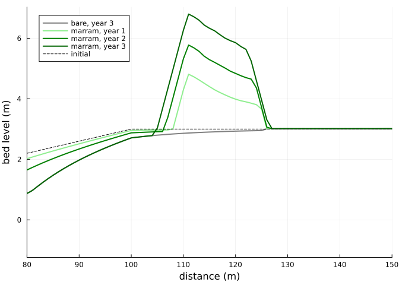
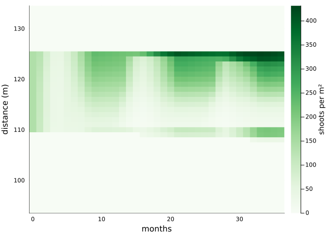
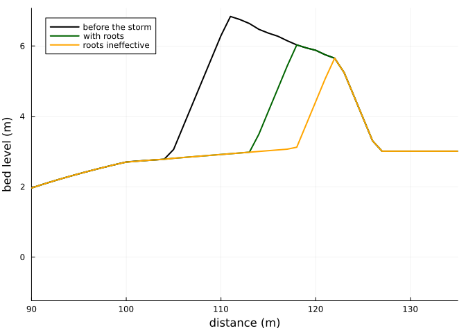

A foredune built by marram grass
Simon Frost
- Overview
- The beach and its weather
- The dune
- The plants
- How densely to plant
- A storm
- What remains uncertain
Overview
With veg_model = marram, every grid cell carries the marram grass model of the previous vignette, and the plants and the bed are coupled both ways:
- Plants shape the wind. Each time step, shoot density and canopy height give a frontal area. That frontal area becomes the effective cover in AeoLiS’s shear reduction,
1 / sqrt(1 + gamma_vegshear rhoveg). The shoots bend in strong wind, so the cover depends on the current wind speed (Laporte-Fauret et al. 2024; Walter et al. 2012). - The bed shapes the plants. Every
veg_interval(a day), each cell is advanced using:- the rate of bed-level change since the last update, as burial;
- the fraction of the interval it spent under water;
- rainfall and evapotranspiration from
veg_water_file; - the day of the year from
refdate.
- Plants spread. Bare cells are colonised from occupied neighbours at about 0.4 m per year (Keijsers et al. 2015), with occasional jumps (Bonte et al. 2021).
- Roots resist waves. When a storm cuts back the dune, sand in the rooted layer costs more of the waves’ work to remove than bare sand (Figlus et al. 2014; De Battisti and Griffin 2020).
ENV["GKSwstype"] = "100"
using Aeolis
using Plots
using Printf
using RandomThe beach and its weather
A transect rises from below the low-tide line to a backshore at 3 m, 100 m inland. Beyond 126 m the hinterland is fixed, so the bare sand behind the dune does not blow away. There is a semidiurnal tide of 1 m. Every day has a new onshore wind: a Weibull speed with a mean of 7 m/s, from directions within 40° of shore-normal. Rain falls on 45 % of days, and potential evapotranspiration follows the seasons. The weather is drawn from a seeded random number generator, so the vignette is reproducible.
day = 86400.0
years = 3
rng = Xoshiro(1)
x = collect(0.0:1.0:150.0)
zb0 = @. min(-1.0 + x / 25, 3.0)
nd = 365 * years + 1
td = (0:(nd - 1)) .* day
wind = hcat(td, [7.0 / 0.886 * sqrt(-log(rand(rng))) for _ in td],
[270.0 + 80 * (rand(rng) - 0.5) for _ in td])
tt = collect(0.0:3600.0:(nd * day))
tide = hcat(tt, sin.(2pi .* tt ./ (12.42 * 3600)))
doy = [(k % 365) + 1 for k in 0:(nd - 1)]
water = hcat(td, [rand(rng) < 0.45 ? -4.9 * log(rand(rng)) : 0.0 for _ in td],
@. 2.0 - 1.5 * cos(2pi * (doy - 15) / 365))
base = (; xgrid_file=x, bed_file=zb0, ne_file=(@. ifelse(x >= 126, zb0, -10.0)),
th_nelayer=true, wind_file=wind, tide_file=tide, process_tide=true,
grain_size=0.0003, dt=3600.0, tstop=years * 365day, output_times=30day,
refdate="2020-01-01 00:00", process_avalanche=true,
output_vars=[:zb, :veg_N, :hveg, :rhoveg, :veg_P, :veg_Gb, :veg_zdot])
nothingMarram is planted between 110 and 125 m at 30 % of the density of a closed stand, 141 shoots per m². The same beach is also run without plants.
planting = @. ifelse(110 <= x <= 125, 0.3, 0.0)
marram = solve(AeolisProblem(AeolisParameters(; base..., process_vegetation=true,
veg_model=:marram, veg_file=planting,
veg_water_file=water)); rng=Xoshiro(2))
bare = solve(AeolisProblem(AeolisParameters(; base...)))
nothingThe dune
z = transect(marram, :zb)
zbare = transect(bare, :zb)
volume(zz) = sum(max.(zz[101:end] .- 3.0, 0.0)) # m³ per m of beach, above 3 m
plt = plot(x, zbare[:, end]; color=:gray, lw=2, label="bare, year 3",
xlabel="distance (m)", ylabel="bed level (m)", xlims=(80, 150), legend=:topleft)
for (k, c) in zip((13, 25, 37), (:lightgreen, :green, :darkgreen))
plot!(plt, x, z[:, k]; lw=2, color=c, label="marram, year $((k - 1) ÷ 12)")
end
plot!(plt, x, zb0; color=:black, ls=:dash, label="initial")
plt
for k in (13, 25, 37)
@printf("year %d: dune volume %.1f m³/m with marram, %.1f m³/m bare; crest %.2f m\n",
(k - 1) ÷ 12, volume(z[:, k]), volume(zbare[:, k]), maximum(z[:, k]))
endyear 1: dune volume 20.1 m³/m with marram, 0.3 m³/m bare; crest 4.81 m
year 2: dune volume 35.7 m³/m with marram, 0.3 m³/m bare; crest 5.78 m
year 3: dune volume 53.6 m³/m with marram, 0.3 m³/m bare; crest 6.80 mThe bare beach builds no dune: sand blown off the beach crosses the flat backshore. The planted strip slows the wind at the bed, traps the sand and grows a dune several metres high in three years. The wind blows onshore every day here, so this rate is high for a real coast.
The plants
N = transect(marram, :veg_N)
months = (0:(size(N, 2) - 1))
heatmap(months, x[95:135], N[95:135, :]; xlabel="months", ylabel="distance (m)",
colorbar_title="shoots per m²", c=:Greens)
Shoot density rises each summer and falls back each winter.
- Seaward edge: the stand spreads over the bare beach a little each year, which is as much as the front speed allows.
- Crest: the stand thins where the dune grows fastest.
The diagnostics at the end of the run show why:
G = transect(marram, :veg_Gb)
zdot = transect(marram, :veg_zdot)
tr = MarramTraits()
for i in 106:4:126
@printf("x = %3d m: bed %.2f m, burial %5.2f m/season, G_b %.2f, shoots %3.0f per m²\n",
x[i], z[i, end], zdot[i, end] * Aeolis.season_length(tr), G[i, end], N[i, end])
endx = 105 m: bed 3.03 m, burial 0.47 m/season, G_b 0.82, shoots 0 per m²
x = 109 m: bed 5.62 m, burial 0.50 m/season, G_b 0.77, shoots 199 per m²
x = 113 m: bed 6.60 m, burial 0.72 m/season, G_b 0.30, shoots 30 per m²
x = 117 m: bed 6.12 m, burial 0.50 m/season, G_b 0.77, shoots 126 per m²
x = 121 m: bed 5.73 m, burial 0.34 m/season, G_b 0.99, shoots 259 per m²
x = 125 m: bed 3.95 m, burial -0.04 m/season, G_b 0.98, shoots 414 per m²Where the crest is buried by about 0.7 m per growing season, more than twice the optimum (Nolet et al. 2018), the burial multiplier G_b falls to about 0.3. Fewer shoots survive there than on the flanks. The landward edge receives little sand. The model would slowly lower vigour there through soil-biota pressure, but three years is too short for that to show.
How densely to plant
The stand is planted at densities from 2 % to 100 % of a closed stand, and run for two years:
for c in (0.02, 0.1, 1.0)
p = AeolisParameters(; base..., tstop=2 * 365day, output_times=365day,
process_vegetation=true, veg_model=:marram,
veg_file=(@. ifelse(110 <= x <= 125, c, 0.0)),
veg_water_file=water)
zz = transect(solve(AeolisProblem(p); rng=Xoshiro(2)), :zb)
@printf("planted at %4.0f %%: dune volume %.1f m³/m after two years\n", 100c,
volume(zz[:, end]))
endplanted at 2 %: dune volume 33.1 m³/m after two years
planted at 10 %: dune volume 34.4 m³/m after two years
planted at 100 %: dune volume 38.0 m³/m after two yearsEven a sparse planting builds most of the dune, for two reasons:
- Shelter saturates. The drag on full-height marram reaches its cap at about 45 shoots per m².
- Sparse stands fill in. They grow toward their capacity within a season or two.
Bonte et al. (2021) found that dunes grow fastest at intermediate cover. The model does not reproduce this, either here or in two-dimensional runs with patchy planting, where dune volume also rose with the area planted. Why the two differ is not yet understood. The supply of sand, the measure of dune growth, and how trapping depends on cover in their cellular model are candidates.
A storm
After the three years, a storm attacks the dune for two days. A surge of 2.5 m and waves 3 m high with a 10 s period collide with the dune face, which erodes as in Palmsten and Holman (2012).
The storm run starts from the state after three years (u0), so the roots are those the dune grew. It is repeated with the roots made ineffective: a traits file sets the strength of bare sand, tau0, so high that reinforcement adds nothing. The light wind moves no sand.
The dune toe is set at 2.7 m. AeoLiS takes as the toe the point of the profile nearest that elevation, and the hinterland lies at exactly 3 m.
t0 = years * 365day
storm = (; tstart=t0, tstop=t0 + 2day, output_times=2day,
wind_file=[0.0 2.0 270.0; 4000day 2.0 270.0], tide_file=[0.0 2.5; 4000day 2.5],
wave_file=[0.0 3.0 10.0; 4000day 3.0 10.0], process_wave=true, process_runup=true,
process_dune_erosion=true, dune_toe_elevation=2.7, beach_slope=0.04)
inert = tempname() * ".toml"
write(inert, "tau0 = 1e12\n")
u3 = marram.u
eroded = Dict{String,Float64}()
plt = plot(x, u3.zb[:, 2]; color=:black, lw=2, label="before the storm",
xlabel="distance (m)", ylabel="bed level (m)", xlims=(90, 135), legend=:topleft)
for (label, kw, c) in (("with roots", (;), :darkgreen), ("roots ineffective", (; veg_traits_file=inert), :orange))
p = AeolisParameters(; base..., storm..., process_vegetation=true, veg_model=:marram,
veg_file=planting, kw...)
z1 = solve(AeolisProblem(p; u0=u3); rng=Xoshiro(3)).u.zb[:, 2]
eroded[label] = sum(max.(u3.zb[:, 2] .- z1, 0.0))
plot!(plt, x, z1; lw=2, color=c, label=label)
end
@printf("eroded: %.1f m³/m with roots, %.1f m³/m without; %.0f %% less\n",
eroded["with roots"], eroded["roots ineffective"],
100 * (1 - eroded["with roots"] / eroded["roots ineffective"]))
plteroded: 29.7 m³/m with roots, 42.6 m³/m without; 30 % less
The roots keep a third of the dune face that the storm would otherwise take. Flume experiments found 8-37 % less erosion with vegetation (Figlus et al. 2014; Kosmalla et al. 2026), and intact cores of marram 36 % (De Battisti and Griffin 2020). The fine-root fraction of the traits was fitted to these, and the run falls in their range.
The model does not represent one effect seen in a large flume (Feagin et al. 2023): a vegetated dune that eroded faster, because plants changed the run-up and infiltration of the swash.
What remains uncertain
- The burial response and soil-biota pressure rest on few studies.
- Root reinforcement: the tensile strength of marram roots has not been measured, and the erosion data constrain only its product with the fine-root fraction.
Both uncertainties are listed with ranges in marram_info.
Bonte, Dries, Femke Batsleer, Sam Provoost, et al. 2021. “Biomorphogenic Feedbacks and the Spatial Organization of a Dominant Grass Steer Dune Development.” Frontiers in Ecology and Evolution 9: 761336. https://doi.org/10.3389/fevo.2021.761336.
De Battisti, Davide, and John N. Griffin. 2020. “Below-Ground Biomass of Plants, with a Key Contribution of Buried Shoots, Increases Foredune Resistance to Wave Swash.” Annals of Botany 125: 325–34. https://doi.org/10.1093/aob/mcz125.
Feagin, Rusty A., Rachel A. Innocenti, Hailey Bond, et al. 2023. “Does Vegetation Accelerate Coastal Dune Erosion During Extreme Events?” Science Advances 9: eadg7135. https://doi.org/10.1126/sciadv.adg7135.
Figlus, Jens, Jacob M. Sigren, Anna R. Armitage, and Robert C. Tyler.
- “Erosion of Vegetated Coastal Dunes.” *Coastal Engineering
Proceedings* 1 (34): sediment.20. https://doi.org/10.9753/icce.v34.sediment.20.
Keijsers, Joep G. S., Alma V. De Groot, and Michel J. P. M. Riksen.
- “Vegetation and Sedimentation on Coastal Foredunes.”
Geomorphology 228: 723–34. https://doi.org/10.1016/j.geomorph.2014.10.027.
Kosmalla, Viktoria, Oliver Lojek, Lukas Ahrenbeck, et al. 2026. “Vegetation Effects on Dune Erosion Under Wave Collision: Influence of Planting Density, Biomass Distribution and Arrangement in Scaled Experiments.” Coastal Engineering 204: 104899. https://doi.org/10.1016/j.coastaleng.2025.104899.
Laporte-Fauret, Quentin, Meagan Wengrove, Peter Ruggiero, et al. 2024. “A New Approach to Account for Species-Specific Sand Capture by Plants in an Aeolian Sediment Transport and Coastal Dune Building Model.” Journal of Geophysical Research: Earth Surface 129: e2024JF007867. https://doi.org/10.1029/2024JF007867.
Nolet, Corjan, Marinka van Puijenbroek, Juha Suomalainen, Juul Limpens, and Michel Riksen. 2018. “UAV-Imaging to Model Growth Response of Marram Grass to Sand Burial: Implications for Coastal Dune Development.” Aeolian Research 31: 50–61. https://doi.org/10.1016/j.aeolia.2017.08.006.
Palmsten, Margaret L., and Robert A. Holman. 2012. “Laboratory Investigation of Dune Erosion Using Stereo Video.” Coastal Engineering 60: 123–35. https://doi.org/10.1016/j.coastaleng.2011.09.003.
Walter, Benjamin, Christof Gromke, and Michael Lehning. 2012. “Shear-Stress Partitioning in Live Plant Canopies and Modifications to Raupach’s Model.” Boundary-Layer Meteorology 144: 217–41. https://doi.org/10.1007/s10546-012-9719-4.